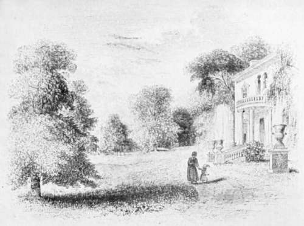

Chapter II. Beauties And Principles Of The Art
Description
This section is from the book "Landscape Gardening", by Andrew Jackson Downing. Also available from Amazon: Landscape Gardening.
Chapter II. Beauties And Principles Of The Art
"Here Nature in her unaffected dresse, Plaited with vallies and imbost with hills, Enchast with silver streams, and fringed with woods Sits lovely." —
Chamberlayne.
"Il est des soins plus doux, un art plus enchanteur. C'est peu de charmer l'ceil, il faut parler au coeur. Avez-vous done connu ces rapports invisibles, Des corps inanimes et des etres sensibles? Avez-vous entendu des eaux, des pres, des bois, La muette eloquence et la secrete voix? Rendez-nous ces effets." Les Jardins, Book I.
BEFORE we proceed to a detailed and more practical consideration of the subject, let us occupy ourselves for a moment with the consideration of the different results which are to be sought after, or, in other words, what kinds of beauty we may hope to produce by Landscape Gardening. To attempt the smallest work in any art, without knowing either the capacities of that art, or the schools, or modes, by which it has previously been characterized, is but to be groping about in a dim twilight, without the power of knowing, even should we be successful in our efforts, the real excellence of our production; or of judging its merit, comparatively, as a work of taste and imagination.
The beauties elicited by the ancient style of gardening were those of regularity, symmetry, and the display of labored art. These were attained in a merely mechanical manner, and usually involved little or no theory. The geometrical form and lines of the buildings were only extended and carried out in the garden. In the best classical models, the art of the sculptor conferred dignity and elegance on the garden, by the fine forms of marble vases and statues; in the more intricate and labored specimens of the Dutch school, prevalent in England in the time of William IV, the results evince a fertility of odd conceits, rather than the exercise of taste or imagination. Indeed, as, to level ground naturally uneven, or to make an avenue, by planting rows of trees on each side of a broad walk, requires only the simplest perception of the beauty of mathematical forms, so, to lay out a garden in the geometric style, became little more than a formal routine, and it was only after the superior interest of a more natural manner was enforced by men of genius, that natural beauty of expression was recognized, and Landscape Gardening was raised to the rank of a fine art.*
The ancient style of gardening may, however, be introduced with good effect in certain cases. In public squares and gardens, where display, grandeur of effect, and a highly artificial character are desirable, it appears to us the most suitable; and no less so in very small gardens, in which variety and irregularity are out of the question. Where a taste for imitating an old and quaint style of residence exists, the symmetrical and knotted garden would be a proper accompaniment; and pleached alleys, and sheared trees, would be admired, like old armor or furniture, as curious specimens of antique taste and custom.
The earliest professors of modern Landscape Gardening have generally agreed upon two variations, of which the art is capable — variations no less certainly distinct, on the one hand, than they are capable of intermingling and combining, on the other. These are the beautiful and the picturesque: or, to speak more definitely, the beauty characterized by simple and flowing forms, and that expressed by striking, irregular, spirited forms.
* To most landscape architects of the present time, Mr. Downing's remarks on the geometrical style will seem slighting. They are much more liberal, however, than most of the discussions of that day. Early American thought, in particular, ran to partisan extremes in condemning the geometrical style, so that while Mr. Downing seems to have had little conception of its fundamental merits or practical possibilities, he had the good taste to spare his readers the usual venomous diatribes. — F. A. W.
Fig. 5. The Beautiful as Illustrated by Mr. Downing.
The admirer of nature, as well as the lover of pictures and engravings, will at once call to mind examples of scenery distinctly expressive of each of these kinds of beauty. In nature, perhaps some gently undulating plain, covered with emerald turf, partially or entirely encompassed by rich, rolling outlines of forest canopy, — its wildest expanse here broken occasionally, by noble groups of round-headed trees, or there interspersed with single specimens whose trunks support heads of foliage flowing in outline, or drooping in masses to the very turf beneath them. In such a scene we often behold the azure of heaven, and its silvery clouds, as well as the deep verdure of the luxuriant and shadowy branches, reflected in the placid bosom of a sylvan lake: the shores of the latter swelling out, and receding, in gentle curved lines; the banks, sometimes covered with soft turf sprinkled with flowers, and in other portions clothed with luxuriant masses of verdant shrubs. Here are all the elements of what is termed natural beauty, — or a landscape characterized by simple, easy, and flowing lines.
For an example of the opposite character, let us take a stroll to the nearest woody glen in your neighborhood -perhaps a romantic valley, half shut in on two or more sides by steep rocky banks, partially concealed and overhung by clustering vines, and tangled thickets of deep foliage. Against the sky outline breaks the wild and irregular form of some old, half decayed tree near by, or the horizontal and unique branches of the larch or the pine, with their strongly marked forms. Rough and irregular stems and trunks, rocks half covered with mosses and flowering plants, open glades of bright verdure opposed to dark masses of bold shadowy foliage, form prominent objects in the foreground. If water enlivens the scene, we shall hear the murmur of the noisy brook, or the cool dashing of the cascade, as it leaps over the rocky barrier. Let the stream turn the ancient and well-worn wheel of the old mill in the middle ground, and we shall have an illustration of the picturesque, not the less striking from its familiarity to every one.
Continue to:
- prev: The Villa Residence Of Alexander Brown, Esq
- Table of Contents
- next: Beauties And Principles Of The Art. Part 2